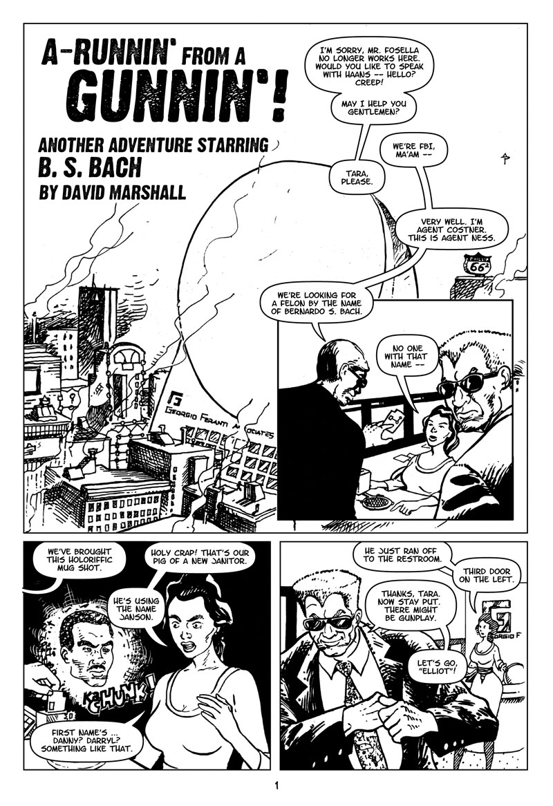
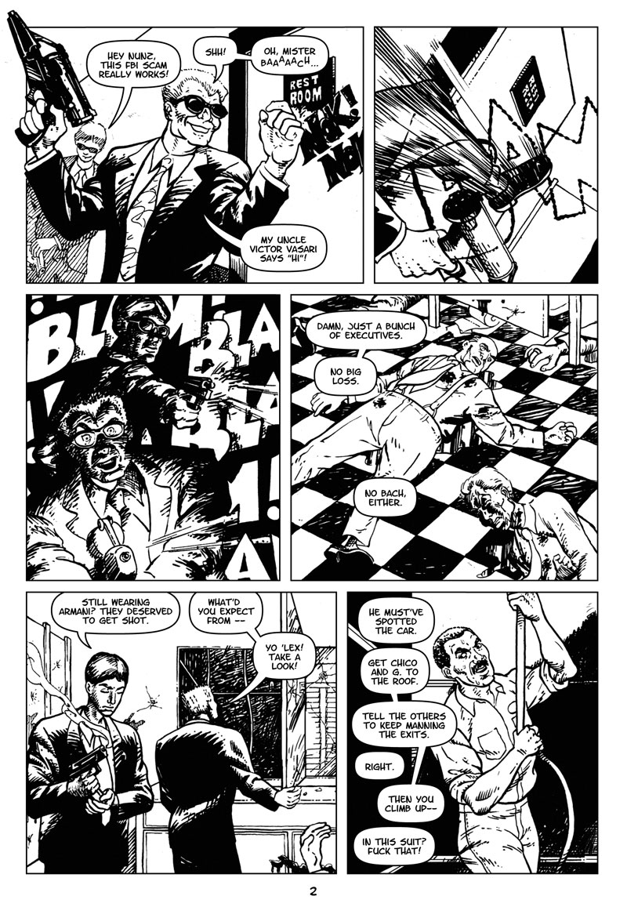
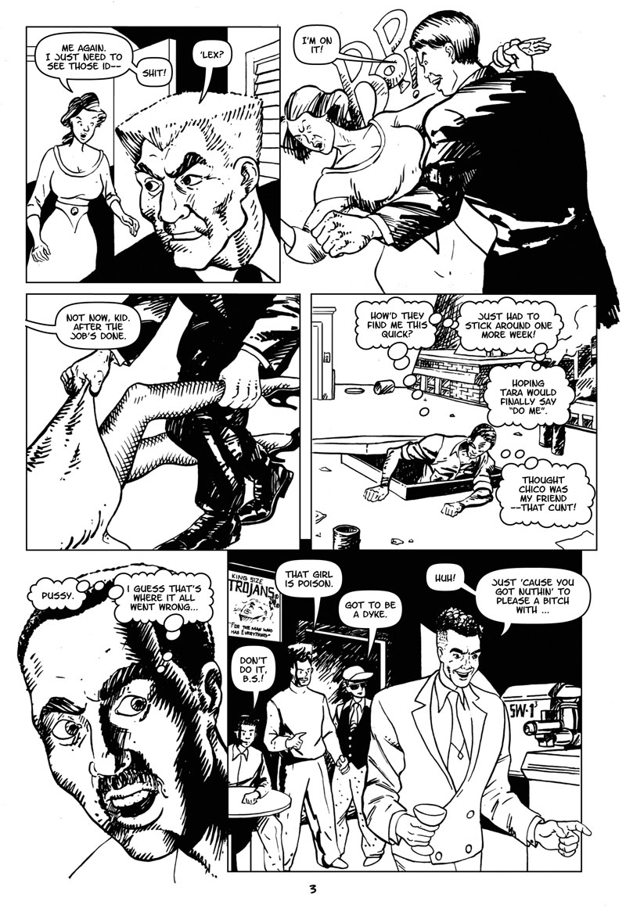
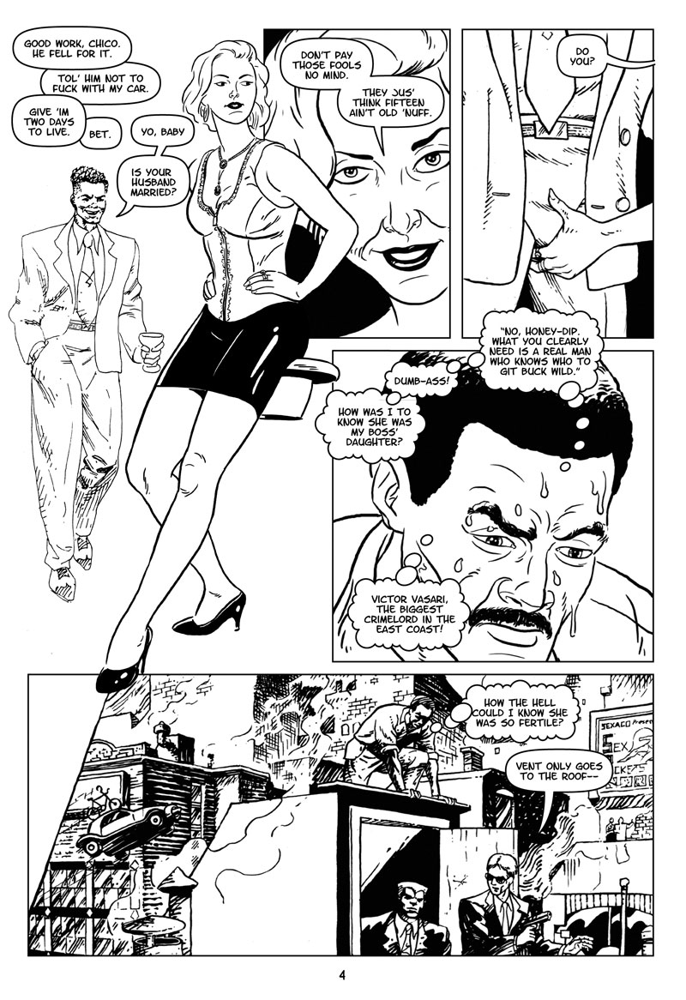
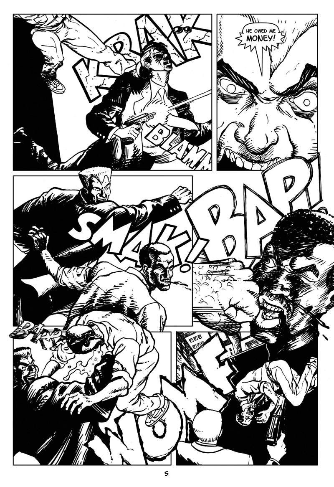
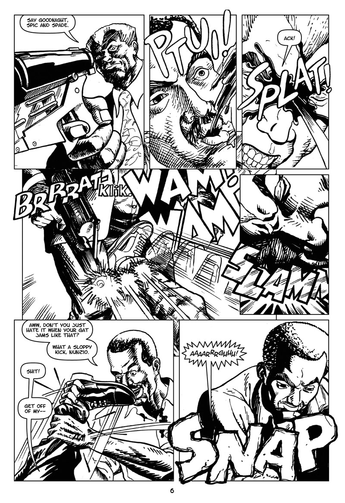
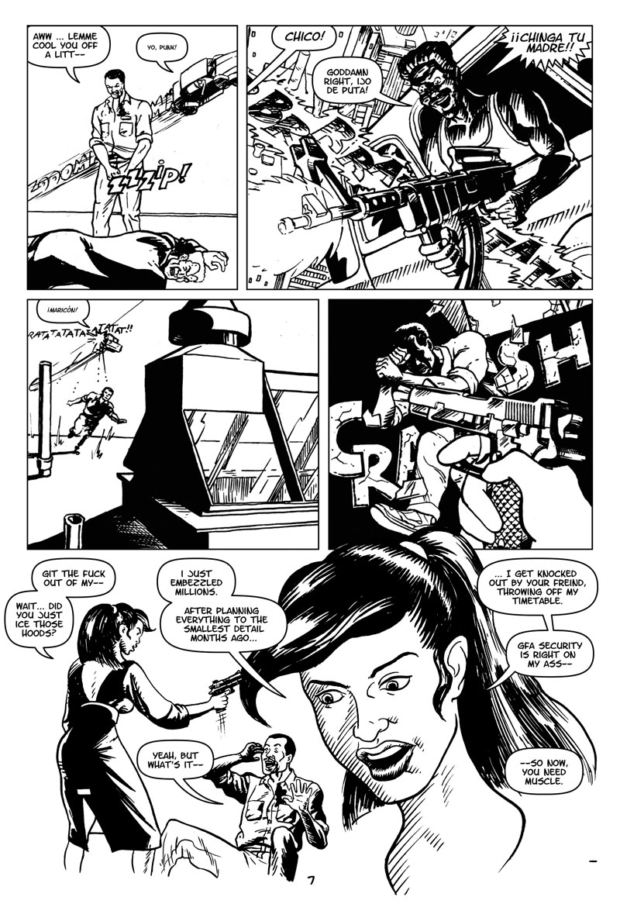
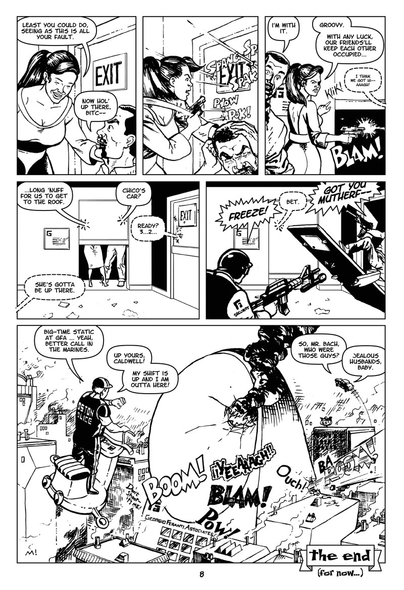

A-Runnin’ From A Gunnin’
(R; Scifi/Action) A petty thief is hunted by his former Mafia employers, wealthy ex-girlfriends and various law enforcement agencies.
A-Runnin’ From A Gunnin’: Page 1 of 8

About This Page
The Georgio Feranti Associates logo is based on Gregory Fosella Associates, my first big-time design employer. The women are drawn so badly, you'd think I'd never seen an actual one. Still, as long as Steve Ditko lives, I'll always be the second-worst girl drawer in comics. My 1990 "technology of tomorrow today" seems so Retrofuturistic now.
A-Runnin’ From A Gunnin’: Page 2 of 8

About This Page
This page is almost 100% unadjusted from the original crime version. The interior architecture is based on the Kenmore Square brownstone I worked in. The bathroom mirror really was a hinged door to a roof vent. The guns were referenced from 1990 gun magazines from Harvard Square's Out of Town News.
A-Runnin’ From A Gunnin’: Page 3 of 8

About This Page
The story's flashback is to 1990 (when it was written). This version of Boston is a merge of 100-year-old brick factory buildings and claustrophobic futurism of Howard Chaykin's American Flagg! and Dean Motter's Mister X.
A lot of the slang comes from the 1990 Bell Biv DeVoe album Poison (Mentally hip-hop, smoothed out on the R&B tip with a pop feel appeal). The lead single, also called Poison, had the line "Never trust a big butt and a smile". The flashback panel also has references to Burger King enthusiasts Digital Underground, Public Enemy's dance group S1W and a Bobby Brown-inspired Gumby haircut. Yikes!
A-Runnin’ From A Gunnin’: Page 4 of 8

About This Page
It took four pages, but I started getting a handle on how to ink this story. The girl in panel 1 and the B.S. Bach in panel 4 are redrawn for this presentation. The originals looked horrible, so I corrected them during the digital lettering process. The new girl is based on Cyd Charisse (pose reference) and my 1990-era girlfriend Kristy Foster (currently principal of Foster Earthworks).
A-Runnin’ From A Gunnin’: Page 5 of 8

About This Page
I'm still proud of the inking, layout and sound effects. The hitman's rant is inspired by George C. Scott's Bert Gordon in The Hustler.
A-Runnin’ From A Gunnin’: Page 6 of 8

About This Page
More great sound effects, two-fisted inking and a swipe from Dark Knight Returns.
A-Runnin’ From A Gunnin’: Page 7 of 8

About This Page
Alex Toth would hate the storytelling angles of the first two panels. Nunzio's pose is all wrong for a guy with a broken leg, and Chico's car is pointed the the wrong way to shoot down at Mr. Bach. Wish I spent half the time of getting the guns right on drawing the women better. Thanks to the late great John Garcia for spanish profanity reference "ijo de puta" and "chinga tu madre".
A-Runnin’ From A Gunnin’: Page 8 of 8

About This Page
An improbable shootout leads to an even more improbable getaway. The End.
Previous
Next
Story Notes
Bernardo Sanchez Bach is inspired by The Fugitive, the classic television series about a drifter who gets nervous when someone in a suit gets nosey. I wrote and drew this for Mindgame Gallery, a science fiction anthology in 1990. I didn't have a pure science fiction story, so set one of my crime strories in a "technology of tomorrow today" universe (flying cars, mobile technology, Metropolis-scale city). Even better cyberpunk examples include Howard Chaykin's American Flagg! and Blade Runner.
The hitmen are based on Charlie and Lee of the 1964 film The Killers (remake of the 1946 Burt Lancaster film, both added a lot of Hollywood fluff to Ernest Hemingway's short story).
The storytelling still holds up, but the art is hampered with sloppy drafting and indecisive inking. I tried merging the "morse code" look Barry Smith used on "Red Nails" with the "quick-motion thin line/thick brush" technique favored by Frank Miller (by way of Carmine Infantino and Hugo Pratt).
I didn't learn proper lettering technique in 1990, so butchered my own work with markers. The orginals have aged so horribly, it was better to reletter the whole damn story with a font! Even then, my new word balloons are modeled after Artie Simek's.
Tools and Materials
- 10" x 15" live area on 14" x 17" bristol paper
- Higgins Black Magic india ink
- Short-handle round #4 sable brush
- Ruling pen (borders)
- Speedball nib #512 (straight lines, details)
- Adobe Illustrator and Letter-O-Matic font
- Adobe Photoshop (production)
David Marshall, retro posting from Meltdown House, 02139
Back to top
{kind=link}
{kind=link}